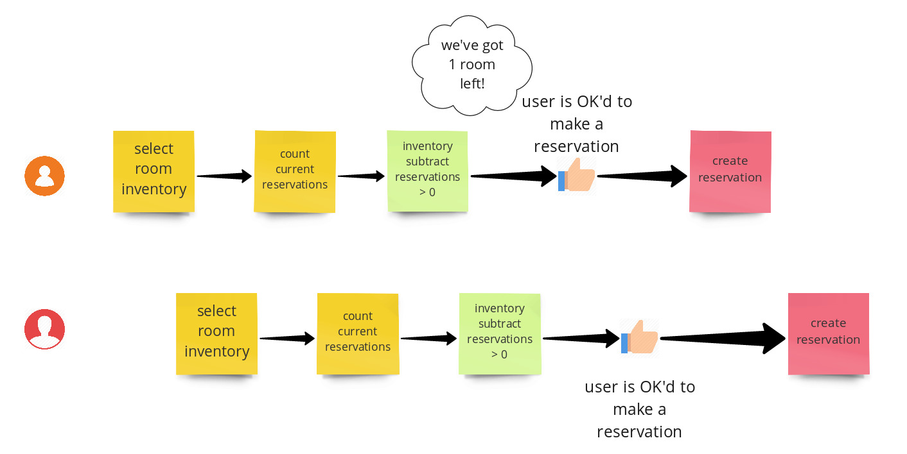

Modelling many users making simultaneous hotel reservations in the database
Stephen:We can sign up every user ... in the world
Me:... I wonder with our current code, what happens with that many users attempting to making reservations? :thinking_face:
The problem

What happens when n many users are attempting to reserve space on a package? If two users perform the reservation check at the same time, then they'll see the same number of rooms available and both be allowed to make a reservation.
If we generalize to n many users making simultaneous requests, it follows that we are quite likely to create more reservations than we actually have inventory for.
The data setup
Currently we have RoomInventory which has a date and a quantity, this represents how much stock we have in total.
We use RoomReservations which have a foreign key to Room, a check in and checkout date and a quantity of requested rooms.
To see if we have something in stock, we subtract reservations from inventory.
The problem lies with the fact that the data does not prevent us from overselling (e.g we could decrement the RoomInventory so it only ever represents current available, but that would likely cause ops confusion)
Database Locks
Max suggested that we have some form of table locking when checking reservations
We want some form of locking, the table level is probably excessive as only one person could ever make a reservation at a time, even if the reservation they're making is for unrelated inventory. So it's probably a good start to see what the docspostgres explicit locking on say.
Postgres and django allows to use a SELECT FOR UPDATE
FOR UPDATE causes the rows retrieved by the SELECT statement to be locked as though for update. This prevents them from being locked, modified or deleted by other transactions until the current transaction ends. That is, other transactions that attempt UPDATE, DELETE, SELECT FOR UPDATE, SELECT FOR NO KEY UPDATE, SELECT FOR SHARE or SELECT FOR KEY SHARE of these rows will be blocked until the current transaction ends; ...
Row Locking RoomInventory (not chosen)
This means if we lock the RoomInventory, then any other select for update will have to wait, So from https://docs.djangoproject.com/en/2.2/ref/models/querysets/#select-for-update our code would look something like:
RoomInventory.objects.select_for_update(the nights we're interested in, skip_locked=True)
with transaction.atomic():
do_an_inventory_check(on the nights we're interested in)
if we have stock then:
create_reservation()
This will mean we can only create Reservations when we hold the lock for the inventory we're interested in.
But what about existing Reservations, I can just up the quantity?
This needs some testing, but we can add a ManyToMany from the RoomReservation to RoomInventory that stores the nights that that reservation is for.
When you lock an object, it also locks the objects that it's related to. When we lock RoomInventory hopefully that'd lock any other RoomReservations on that inventory.
SELECT FOR UPDATE locking other tables in PostgreSQL - Database Administrators Stack Exchange
We'd would need to test for a many to many
skip_locked?
This allows us to other transactions to select_for_update other RoomInventory if there is not currently a lock on those rows.
So we can create inventory for different room inventory concurrently.
Potential Problems
- What's the performance implications of doing this?
- What timeout issues, live/dead/infinite lock scenarios could occur?
- many to many does not mean the reservation is locked? perhaps just the intermediate table?
Summary
lock the RoomInventory using select_for_update(skip_locked=True) for the duration of the inventory check and the creation of the reservation (i.e when we're going through the ambassador flow)
add a RoomReservation.used_inventory ManyToMany(RoomInventory) to prevent editing of existing Reservations at the same time that we're creating a new one.
Room Tokens and locking on a token level
Another idea would be to use foreign key constraints with a RoomInventoryToken model to represent rooms assigned to a reservation, when we want constraints on the number of rooms being sold, it's often best to use database constraints to enforce this, instead of something more fragile in code. So if we add a model:
class RoomInventoryToken(BaseModel):
room_inventory = ForeignKey(room_inventory)
reservation = ForegnKey(Reservation, null=True)
Each token represents a room, (we use token to avoid people thinking we've built rooming) and once it's used, it gets attached to a Reservation.
We'd want for a given list of RoomInventory (days of check in for a hotel) to select requested_quantity unused token(s), this can be achieved by
- using a GROUP_BY room_inventory
- and window function to give each non-null row a row number
- select for update (with skip locked), the one of these results.
This has a few advantages over inventory locking.
we only lock RoomInventoryTokens so multiple people can purchase the same inventory at once
we cannot over sell as we cannot assign tokens to more than one reservation (we'd need to be careful of say not giving away a token after it'd already been assigned)
We'd need to do some other stuff like create n tokens for RoomInventory.quantity and keep that in sync or preferably just remove RoomInventory.quantity altogether.
So, did it work and how'd the code turn out?
Pretty good! Of all the parts of the code that have had to deal with a relative amount of high traffic, this code has performed well, hasn't needed to be changed and our problems have been elsewhere such as pricing calculation.
There are quite a few improvements I'd like to make if I get the time.
Detecting whether the code is currently in a transaction and erroring if it isn't https://stackoverflow.com/questions/18544033/how-to-tell-if-your-select-query-is-within-a-transaction-or-not . I'd rather catch errors at dev time rather than run time.
Looking into the performance of skip_locked, it stands to reason the more transactions that are occuring simultaneously, the more rows the n + 1 th transaction will have to scan over. It hasn't been a problem so far, but I'd rather get ahead of that now.
The code looks a bit scary, this is a combination of django not having CTEs built-in and having to use a seperate library, many developers aren't used to it. Infact when we wanted to use this solution elsewhere, more junior members copy-pasted without really understanding as they were too scared to refactor it. So some improvements are possible.
Educating developers that the Token table doesn't take much space. I gave this explanation to another developer.
- fk to room inventory 1 uuid 128 bits (16 bytes)
- fk to room reservation 1 uuid of 128 bits
- date created date updated. 2 * 8 bytes
- I'm guestimating a standard meme image takes up more space than all the tokens we have in the database